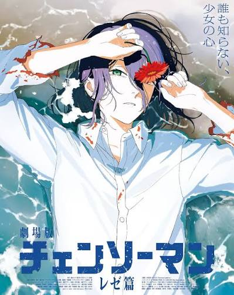

Bisa konfigurasi mikrotik tanpa lihat AI
Membuat wireless,seting NAT,Firewall,Address List dan Block Content.

Rifat akila ramadan
Network & Security Enthusiast
© 2026 [Rifat akila ramadan]
Dirakit dengan tangan sendiri.
Saya suka belajar mengenai teknologi terbaru. selain itu, saya juga suka bersepeda,lari dan berenang
Lihat Portofolio
Semuanya bermula dari satu pertanyaan: bagaimana sebuah paket data sampai ke tujuan, dan bagaimana orang lain bisa membelokkannya? Dari situ saya belajar jaringan, lalu keamanan. Sekarang saya merancang, menguji, dan mengamankan sistem, sambil belajar dari setiap salah konfigurasi.
Topologi, VLAN, dan routing yang rapi, terdokumentasi, dan mudah dirawat.
Mencari celah dari sudut pandang penyerang, lalu melaporkannya dengan bahasa yang jelas.
Firewall, VPN, dan hak akses yang dikencangkan seperlunya, tanpa menyulitkan pengguna.
Panduan langkah demi langkah dan sesi singkat agar tim paham apa yang dipasang.
SMP 3 TASIKMALAYA. masa masa paling seru.
SMKN 4 TASIKMALAYA & SMKN 2 TASIKMALAYA. Pertama kali membuat kabel UTP,splicing FIBER OPTIK,Konfigurasi mikrotik dan pertama kali tertarik CYBERSECURITY.
SMKN 4 TASIKMALAYA. Pertama kali belajar ilmu mengenai jaringan dan komputer
SMKN 2 TASIKMALAYA. Mendalami ilmu tentang jaringan dan komputer lebih dalam lagi,selain itu saya jadi tertarik untuk belajar cyber security.
CISCO PAKET TRACER. [Saya juga mengikuti beberapa course dan mendapatkan sertifikat BASIC NETWORKING,MTCNA, dan DASAR CYBERSECURITY]
Membuat wireless,seting NAT,Firewall,Address List dan Block Content.
Selalu belajar dari kesalahan yang di lakukan
Rajin menabung untuk memebeli barang yang di inginkan